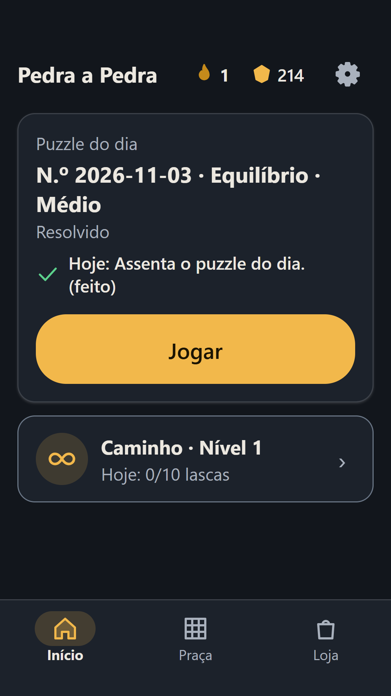
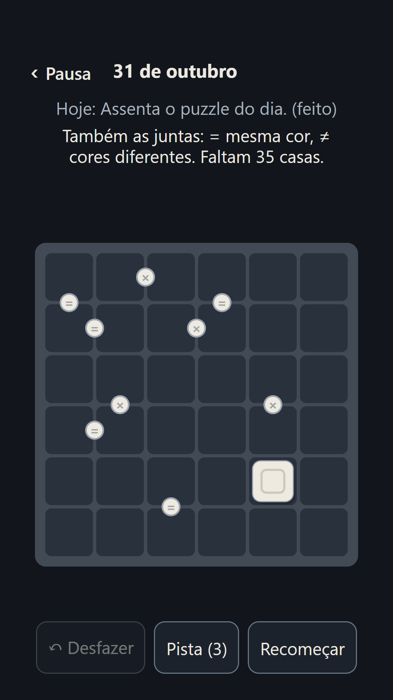
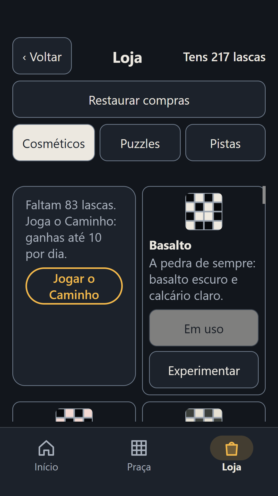
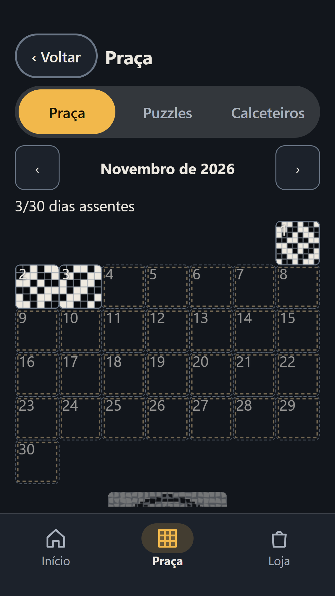
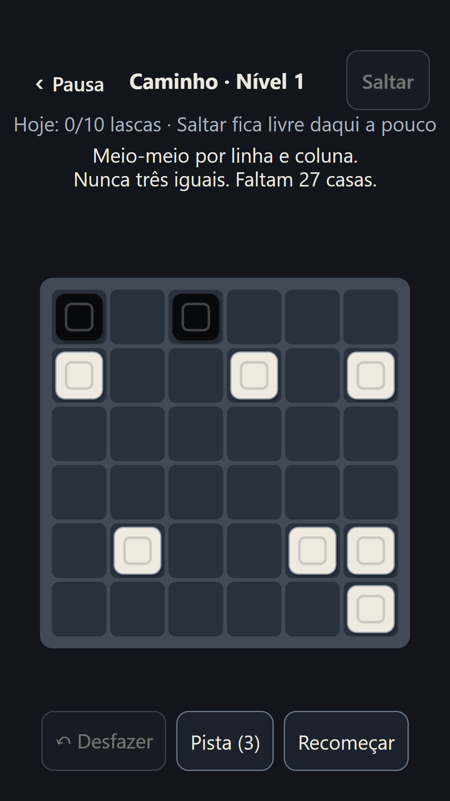

Pedra a Pedra
Um puzzle de calçada por dia. Sem anúncios, sem pressa.
Jogar no browserAbre já, sem instalar nada. Na web não há compras nem anúncios. Em breve na Google Play.
Todos os dias, uma grelha de calçada nova. Toca para pôr pedras pretas e brancas até cada linha e cada coluna ficarem em equilíbrio. Quando acertas, a grelha assenta como um quadrado de calçada na praça do mês.
Capturas

Menu 
O puzzle do dia 
A loja 
Os pacotes 
O teu ofício
O jogo em 3 ideias
Um por dia
O puzzle do dia é igual para todos. Sessões de 3 a 6 minutos, sem relógio.
A praça do mês
Cada dia resolvido assenta a sua calçada; completa a praça e ganhas uma moldura.
O teu ofício
De Aprendiz a Mestre, sempre a subir, nunca a descer.
Como se joga
- Toca numa casa para pôr uma pedra preta ou branca.
- Cada linha e cada coluna tem tantas pretas como brancas.
- Nunca três da mesma cor seguidas. Só há uma solução.
O que tem
- Um puzzle por dia, igual para todos.
- A praça do mês, com molduras.
- O teu ofício: de Aprendiz a Mestre.
- Entre amigos, por um código. Sem tabelas de toda a gente.
- Arquivo e pacotes; o primeiro, o Rossio, é grátis.
- Um polegar, em retrato, com ou sem som; alto contraste e paleta para daltónicos.
Grátis e sem anúncios. Na app Android ganham-se lascas a jogar e trocam-se por pedras, paletas e pacotes; nada dá vantagem.
Privacidade
Sem anúncios e sem rastreio. Entras com uma conta Companha, se quiseres guardar o progresso. Política de privacidade · Eliminar conta